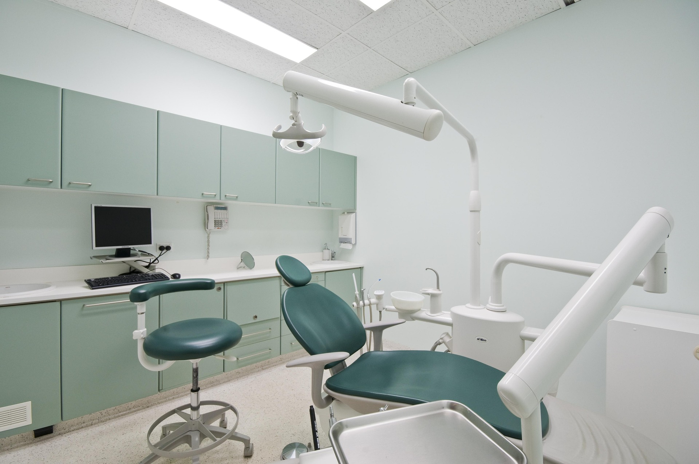
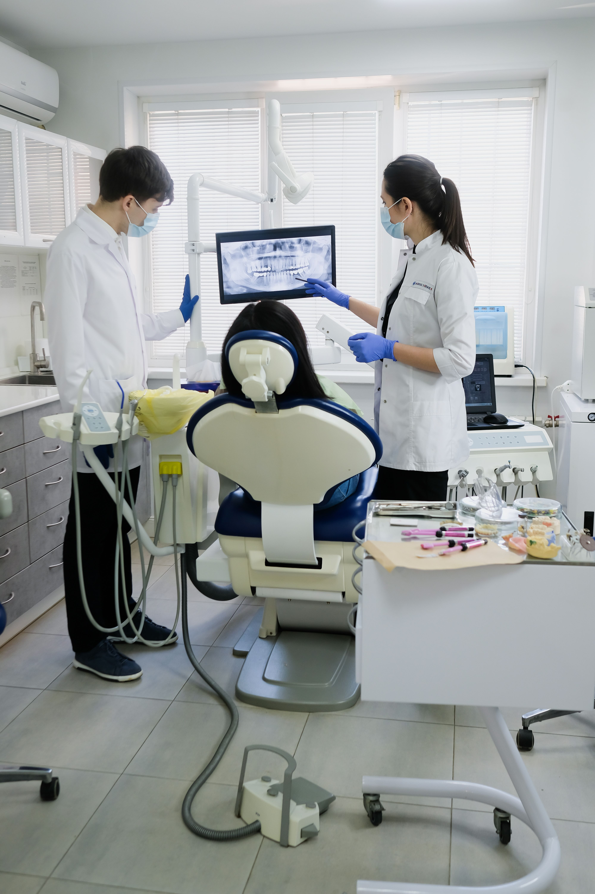
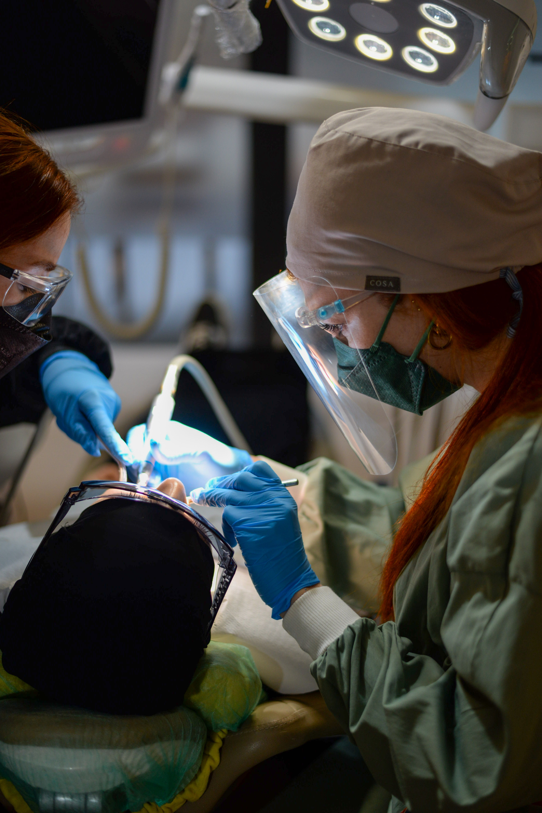
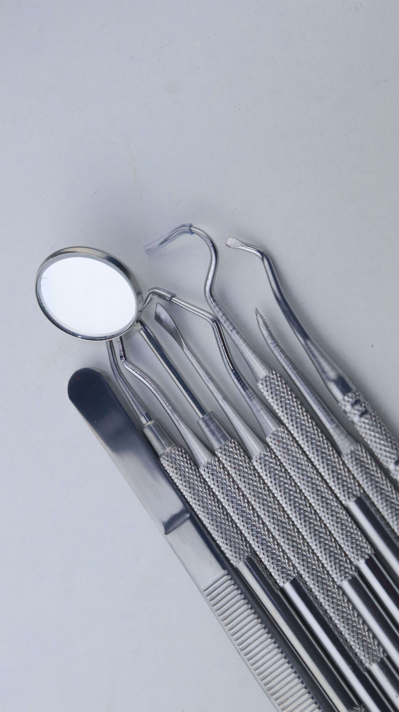

Ortodoncia con brackets metálicos
Tratamiento tradicional, eficaz para la mayoría de los casos.
Ortodoncia en La Ceja, Antioquia
Ortodoncia personalizada en La Ceja, con diagnóstico claro y acompañamiento en cada etapa.

Quiénes somos
En Dental Care creemos que cada sonrisa necesita su propio plan. Combinamos tecnología, atención cercana y explicaciones claras para que sepas qué se hará, por qué y cuánto tiempo tomará.
Nuestra filosofía es simple: informarte con transparencia, tratarte como persona y no como un caso más. Queremos que salgas de cada cita sabiendo exactamente qué sigue y por qué.


La doctora
Ortodoncista · Dental Care
"Cada sonrisa merece un plan hecho a su medida."
La Dra. Aura acompaña a cada paciente desde la primera valoración hasta el día en que retira sus brackets. Su enfoque combina precisión clínica con explicaciones claras para que cada decisión del tratamiento se tome en equipo.
Servicios
Elegimos el tratamiento que mejor se adapta a tu caso, no al revés.
Tratamiento tradicional, eficaz para la mayoría de los casos.
Brackets discretos que se confunden con el color del diente.
Placas removibles y casi invisibles, según la indicación de cada caso.
Guía el crecimiento de los maxilares y previene problemas futuros.
Mantienen el resultado una vez terminado el tratamiento.
Estudio clínico y radiográfico para definir el mejor plan.
Tu primera cita, paso a paso
Sin sorpresas. Sabes exactamente qué esperar desde el primer día.
Revisamos tu caso y resolvemos tus dudas.
Estudios y análisis para entender tu mordida.
Opciones, tiempos y costos explicados claramente.
Comenzamos y te acompañamos en cada control.
Por qué elegirnos
Cada tratamiento se diseña según tu caso, no según una plantilla.
Escáner digital y radiografía digital para diagnósticos más precisos.
Protocolos estrictos de esterilización en cada cita.
Planes y financiación para que el tratamiento sea viable.
Disponibles entre controles para responder tus dudas.

Bioseguridad
Cada instrumento pasa por limpieza, desinfección y esterilización antes de cada paciente. Seguimos los protocolos establecidos por el Ministerio de Salud y contamos con [certificación / protocolo interno].
Testimonios
"Me explicaron todo el proceso desde la primera cita y nunca me sentí perdido."
"Mi hija llegaba con miedo y terminó pidiendo adelantar la cita."
"Quería alineadores y me dijeron con claridad si eran viables para mi caso."
Escríbenos por WhatsApp o solicita una cita desde la agenda. Nuestro equipo te confirmará por WhatsApp.